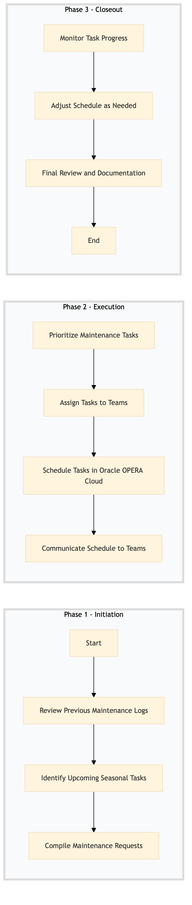

| Role | Steps |
|---|---|
| Facilities Manager | 1.1 1.2 1.3 2.1 2.2 2.3 2.4 3.1 3.2 3.3 |
| Step | Name | Role | System | Input | Output | KPI | Dec? | Exc? | Pain Point / Risk |
|---|---|---|---|---|---|---|---|---|---|
| 1.1 | Review Previous Maintenance Logs | Facilities Manager | Oracle OPERA Cloud | Maintenance logs from the previous week | Updated maintenance log summary | Less than 30 minutes | N | Y | Inconsistent logging practices leading to incomplete data. |
| 1.2 | Identify Upcoming Seasonal Tasks | Facilities Manager | Oracle OPERA Cloud | Seasonal maintenance checklist | List of seasonal tasks to be scheduled | Less than 20 minutes | N | Y | Overlooking critical seasonal maintenance items. |
| 1.3 | Compile Maintenance Requests | Facilities Manager | Oracle OPERA Cloud | Maintenance request forms from departments | Compiled list of maintenance requests | Less than 45 minutes | N | Y | Delayed submission of maintenance requests. |
| 2.1 | Prioritize Maintenance Tasks | Facilities Manager | Oracle OPERA Cloud | Compiled list of maintenance requests and seasonal tasks | Prioritized maintenance schedule | Less than 60 minutes | N | Y | Difficulty in prioritizing tasks based on urgency and impact. |
| 2.2 | Assign Tasks to Teams | Facilities Manager | Oracle OPERA Cloud | Prioritized maintenance schedule | Task assignment list with team responsibilities | Less than 30 minutes | N | Y | Uneven distribution of tasks among teams. |
| 2.3 | Schedule Tasks in Oracle OPERA Cloud | Facilities Manager | Oracle OPERA Cloud | Task assignment list | Scheduled maintenance tasks in the PMS | Less than 45 minutes | N | Y | Technical issues with the PMS system affecting scheduling. |
| 2.4 | Communicate Schedule to Teams | Facilities Manager | Oracle OPERA Cloud, Email | Scheduled maintenance tasks in the PMS | Email notifications sent to teams | Less than 15 minutes | N | Y | Poor communication leading to missed deadlines. |
| 3.1 | Monitor Task Progress | Facilities Manager | Oracle OPERA Cloud | Scheduled maintenance tasks in the PMS | Task progress report | Daily check, less than 30 minutes | Y | Y | Lack of real-time monitoring tools. |
| 3.2 | Adjust Schedule as Needed | Facilities Manager | Oracle OPERA Cloud | Task progress report | Updated maintenance schedule | Less than 45 minutes per adjustment | Y | Y | Inability to quickly adapt to changing priorities. |
| 3.3 | Final Review and Documentation | Facilities Manager | Oracle OPERA Cloud, Email | Updated maintenance schedule | Finalized maintenance schedule document | Less than 60 minutes | N | Y | Documentation errors leading to confusion. |
This process outlines the planned maintenance scheduling at a Marriott full-service hotel, ensuring that all facilities and engineering tasks are systematically managed to maintain high operational standards.